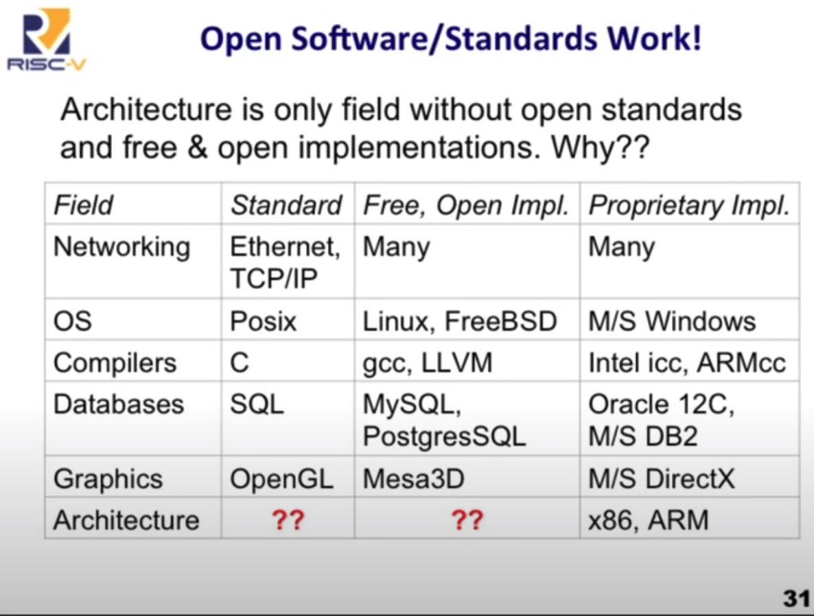
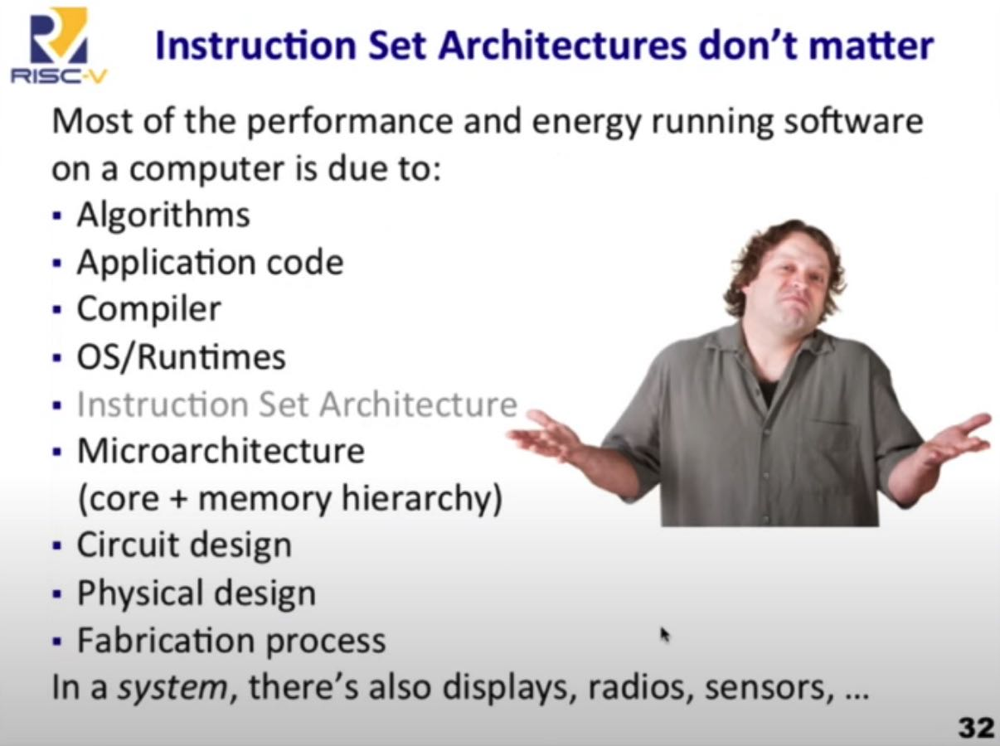
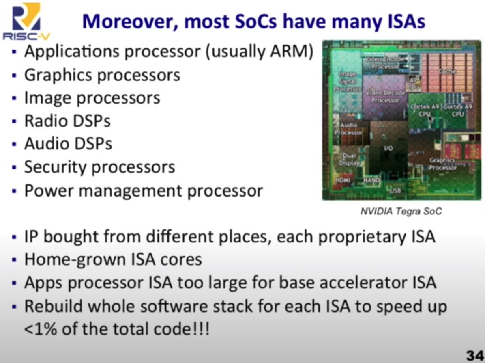
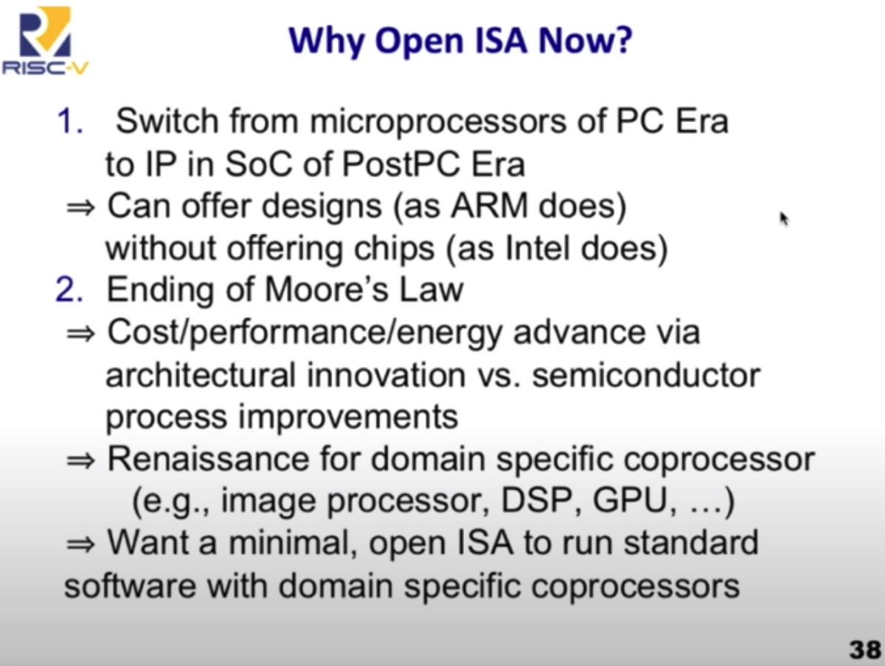
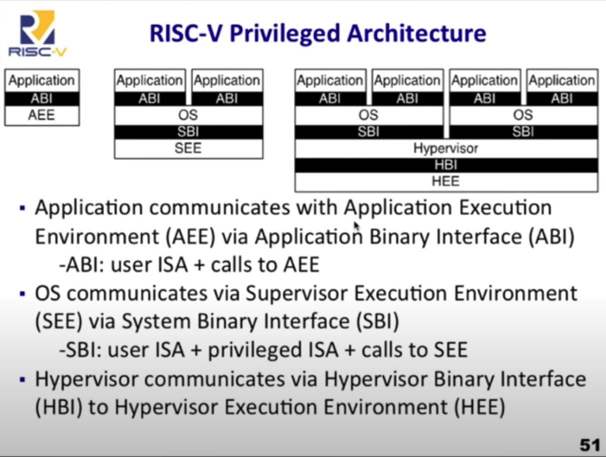
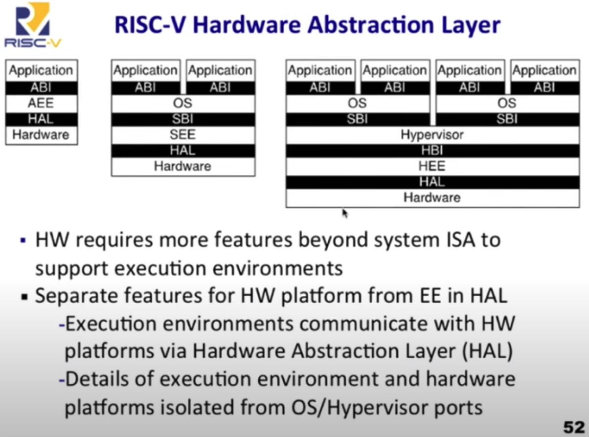
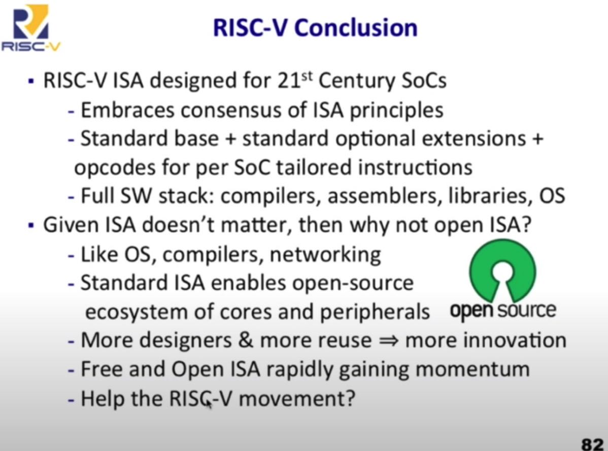

Instruction Sets Want To Be Free: A Case for RISC-V
https://www.youtube.com/watch?v=mD-njD2QKN0
可以看到对于其他比较重要的计算机领域都有对应的开源和闭源实现，而在ISA这层却没有

为什么需要开源的指令集？为什么现在没有开源指令集？因为许多人认为ISA这个部分无关紧要，而事实并不如此。随着专有芯片的研发，每个芯片都需要自带ISA并且需要将SW移植过来，标准/开源ISA的重要性越来越大。



Open ISA 好处有下面这些：

RSICV指令组成部分，后面提到Compressed Instruction Encoding可以将内核从1323KB压缩到839KB, 而bzip2压缩之后只有646KB, 可以看到这个压缩比例是非常高的。

指令集设计上也非常简单和规整，opcode都是定长的4字节，想想x86和Itanium的设计？


RISCV 有为现在操作系统设计的特权指令以及虚拟机指令


